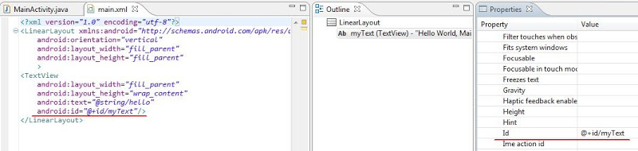
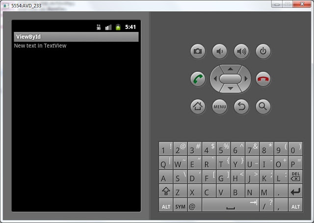
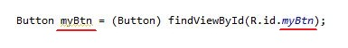
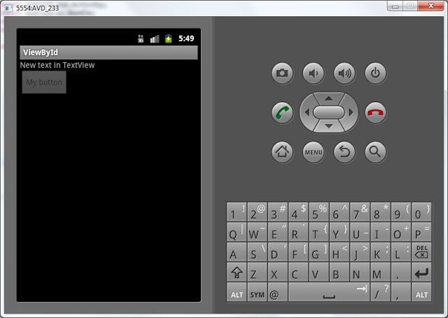

В этом уроке мы:
- научимся обращаться из кода к View-элементам на экране и менять их свойства
Создадим проект:
Project name: P0081_ViewById
Build Target: Android 4.0
Application name: ViewById
Package name: ru.startandroid.develop.viewbyid
Create Activity: MainActivity
Чтобы обратиться к элементу экрана из кода, нам нужен его ID. Он прописывается либо в Properties, либо в layout-файлах, как вам удобнее. Для ID существует четкий формат - @+id/name, где + означает, что это новый ресурс и он должен добавиться в R.java класс, если он там еще не существует.
Давайте откроем main.xml, для TextView укажем ID = @+id/myText и сохраним

Теперь откроем R.java и видим, что для класса id появилась константа myText. Т.е. чтобы к ней обратиться, надо написать R.id.myText.

Она связана с элементом TextView и мы можем ее использовать, чтобы обратиться к элементу программно. Для этого нам понадобится метод findViewById. Он по ID возвращает View. Давайте напишем вызов этого метода. Напомню, что пока мы пишем наш код в методе onCreate. Это метод, который вызывается при создании Activity. Если вдруг непонятно, куда писать, можно подсмотреть в конец урока, там я выложил код.
Откроем MainActivity.java и после строки с вызовом метода setContentView напишем:
View myTextView = findViewById(R.id.myText);Если View подчеркнуто красным, то скорей всего этот класс не добавлен в секцию import. Нажмите CTRL+SHIFT+O для автоматического обновления импорта.
Теперь myTextView (типа View) – это наш TextView на экране. Но тип View – это предок для TextView (и остальных View-элементов). И он нам не подходит, если мы хотим проделывать операции соответствующие TextView. Поэтому нам необходимо преобразование View в TextView. Изменим наш код на следующий:
TextView myTextView = (TextView) findViewById(R.id.myText);Теперь myTextView имеет тип TextView, а результат метода findViewById мы преобразуем из View в TextView. Теперь мы можем применять к myTextView методы класса TextView. Для примера возьмем метод setText. Сейчас отображаемый текст = Hello World, MainActivity!. Мы его программно поменяем на New text in TextView
myTextView.setText("New text in TextView");Сохраняем, запускаем (CTRL+F11) и видим, что текст изменился

Добавим на экран кнопку (Button), Id = @+id/myBtn, текст оставим по умолчанию. Сохраняем - CTRL+SHIFT+S (если не сохранить, то в R.java не появится ID).
Пишем код:
Button myBtn = (Button) findViewById(R.id.myBtn);Обратите внимание, что у меня совпадает имя объекта и ID

Они друг другу не мешают и так делать даже логичнее. Это остается на ваше усмотрение. Так, кнопку мы нашли, теперь давайте изменим ее текст:
myBtn.setText("My button");Запустим приложение. Текст на кнопке поменялся, на кнопку можно понажимать, но ничего происходить не будет. Т.к. мы нигде не указывали, что надо делать при нажатии. Этим займемся на следующем уроке. А пока давайте сделаем кнопку неактивной.
myBtn.setEnabled(false);Мы поменяли параметр Enabled. Теперь на кнопку нельзя нажать. Сохраним, запустим и убедимся.

Добавим CheckBox, id = @+id/myChb. По умолчанию галочка не стоит. Давайте поставим ее программно, для этого используется метод setChecked, который меняет параметр Checked.
CheckBox myChb = (CheckBox) findViewById(R.id.myChb);
myChb.setChecked(true);Запустив приложение видим, что код сработал.
Как видите – все несложно. Используем метод findViewById, чтобы по ID получить объект соответствующий какому-либо View-элементу (Button, TextView, CheckBox) и далее вызываем необходимые методы объектов (setText, setEnabled, setChecked).
В итоге должен получиться такой код:
package ru.startandroid.develop.viewbyid;
import android.app.Activity;
import android.os.Bundle;
import android.widget.Button;
import android.widget.CheckBox;
import android.widget.TextView;
public class MainActivity extends Activity {
/** Called when the activity is first created. */
@Override
public void onCreate(Bundle savedInstanceState) {
super.onCreate(savedInstanceState);
setContentView(R.layout.main);
TextView myTextView = (TextView) findViewById(R.id.myText);
myTextView.setText("New text in TextView");
Button myBtn = (Button) findViewById(R.id.myBtn);
myBtn.setText("My button");
myBtn.setEnabled(false);
CheckBox myChb = (CheckBox) findViewById(R.id.myChb);
myChb.setChecked(true);
}
}